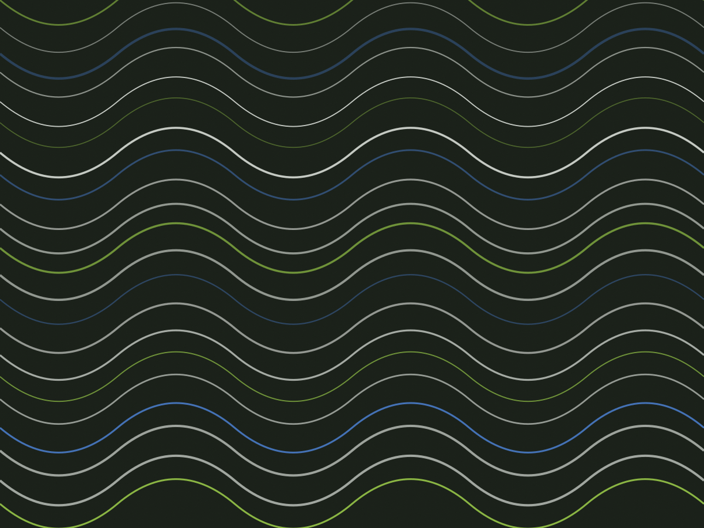
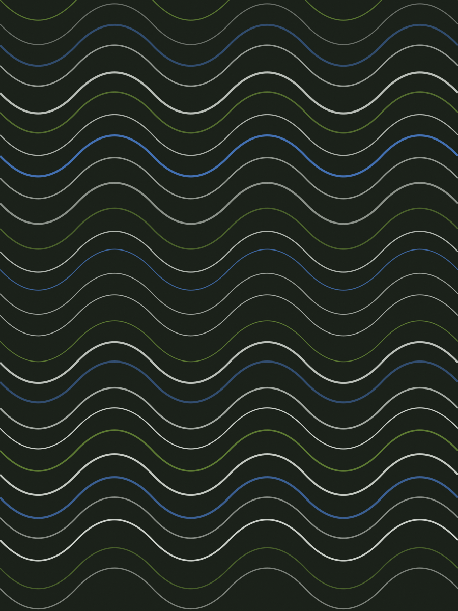
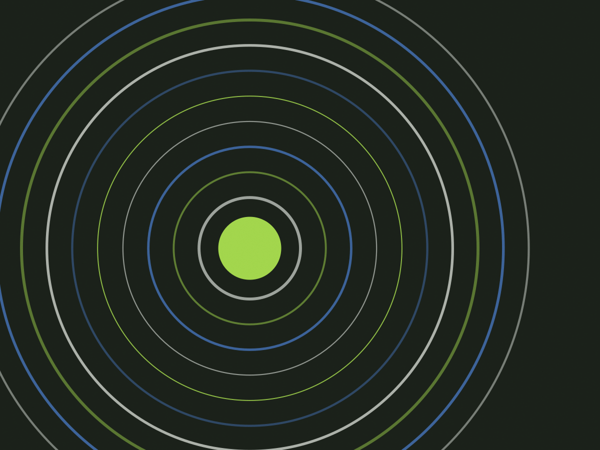
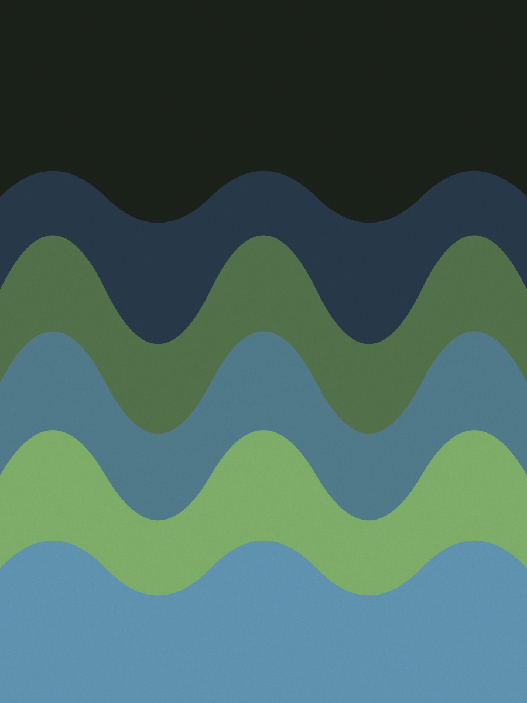

CREFITO-3 · 128.417-F · Alameda dos Arapanés, 940 — Moema
Voltar à corrida com critério, etapa por etapa
Clínica de fisioterapia esportiva com sala de musculação e esteira própria, a 500 metros do metrô Eucaliptos. Avaliação de 90 minutos com vídeo da sua corrida e uma referência objetiva para cada liberação — sem alta por tempo cumprido.
- 60 min
- por sessão, R$ 150
- 90 min
- a avaliação com vídeo e laudo
- 8 a 12
- semanas no caso de tendinopatia
- 6h30
- primeira sessão da manhã

Cinco etapas, cada uma com um critério de saída
O número da etapa não é semana do calendário: é o que você já consegue fazer.
-
Avaliação de 90 minutos
Escala de dor de 0 a 10, goniometria, teste de força com dinamômetro manual e vídeo da corrida em esteira a 8 km/h. Você sai com o laudo impresso e o vídeo no celular.
Critério Dor reproduzível identificada e hipótese funcional registrada no laudo.
-
Controle de dor e carga
Isometria, bicicleta sem impacto e trabalho de quadril na sala de musculação. Duas sessões por semana, com 20 minutos de exercício no fim de cada uma.
Critério Dor até 2/10 durante a sessão e nenhuma piora nas 24 horas seguintes.
-
Força e capacidade
Agachamento unilateral, leg press e elevação de panturrilha com carga progressiva. A planilha fica no aplicativo e você faz os exercícios nos dias sem sessão.
Critério 80% da força do lado oposto no teste e 25 repetições de panturrilha sem dor.
-
Corrida progressiva na esteira
Trote de 2 minutos por 6, com 5% de inclinação e pausa caminhando. A cada sessão a gente ajusta tempo ou velocidade, nunca os dois na mesma semana.
Critério 30 minutos de corrida contínua sem dor e sem alteração na pisada do vídeo.
-
Retorno ao esporte e teste de marcha
Teste de salto unilateral, corrida de 3 km na rua com o fisioterapeuta e revisão do gesto esportivo. A alta vem com uma planilha de 4 semanas para você seguir sozinho.
Critério Simetria de 90% no hop test e 3 km em ritmo de treino sem dor em 48 horas.
As oito a doze semanas são a média dos casos de tendinopatia patelar e de Aquiles atendidos aqui em 2023. Pós-operatório, fratura por estresse e lesão muscular levam mais tempo, e isso é dito na avaliação, não depois.
Três casos, com número e data
Nome abreviado e autorização assinada por cada paciente.
-

Caso 04 · tendinopatia patelar
Bruno S., 41 anos, corredor de rua
Chegou sem conseguir descer escada e com 4 meses de dor no joelho direito. Fez 14 sessões entre março e maio, voltou a correr 5 km na semana 7 e 10 km na semana 9, com carga de treino reduzida em 30%.
-

Caso 07 · pós-operatório de LCA
Luiza M., 28 anos, futebol amador
Quinto mês depois da reconstrução, com déficit de quadríceps de 22%. Onze semanas de trabalho até a simetria de 91% no hop test. Voltou ao treino com bola em setembro, com colete de contato liberado pelo cirurgião.
-

Caso 11 · fáscia plantar
Cláudio R., 55 anos, volta a correr depois de 6 anos
Dor no primeiro passo da manhã havia 8 meses. Sete semanas de progressão, com panturrilha em déficit e apoio plantar controlado. Fechou o teste de marcha com 5 km em 32 minutos, sem dor no dia seguinte.
Eu já tinha feito dez sessões de fisioterapia em outro lugar e sempre ouvia "mais duas semanas". Aqui a primeira coisa que fizeram foi medir a força da minha perna e me mostrar o número.
O vídeo da corrida no fim explicou o que ninguém tinha explicado: eu corria olhando para o chão. A planilha de alta está na geladeira até hoje.
Agenda da semana
Duas salas e uma esteira. Cada horário atende uma pessoa.
| Dia | Sala 1 | Sala 2 | Esteira | Última sessão |
|---|---|---|---|---|
| Segunda | 6h30–13h | 7h–12h | sob agendamento | 20h |
| Terça | 6h30–13h | 7h–12h | 8h–11h | 20h |
| Quarta | 6h30–13h | 7h–12h | sob agendamento | 20h |
| Quinta | 7h–13h | 7h–12h | 8h–11h | 20h |
| Sexta | 6h30–13h | 7h–12h | sob agendamento | 19h |
| Sábado | 8h–12h | fechada | 9h–11h | 12h |
A agenda abre 21 dias antes e o horário é fixo por oito semanas — quem treina às 7h da terça continua às 7h da terça. Alameda dos Arapanés, 940, sala 2 — Moema. Estacionamento no prédio a R$ 15 a hora, com convênio de 2 horas para pacientes.
O que perguntam antes de marcar
Preciso de pedido médico para começar?
Não é obrigatório: fisioterapeuta tem autonomia para avaliar e tratar. Com pedido e exames de imagem na mão, a avaliação rende mais — traga o que tiver, mesmo antigo.
Quantas sessões por semana?
Duas é o padrão nas primeiras quatro semanas. Depois disso, uma sessão por semana com planilha em casa costuma bastar. Quem vem de cirurgia recente começa com três.
Posso continuar treinando durante a reabilitação?
Quase sempre sim, com ajuste de carga. A regra é não treinar o gesto que provocou a lesão até o critério da etapa. O resto do corpo continua trabalhando — parar tudo costuma atrasar o retorno.
Vocês atendem adolescente atleta?
Sim, a partir de 12 anos, com responsável presente na avaliação. Em fase de crescimento, a progressão de carga muda: menos volume por sessão e mais controle.
E se eu não melhorar no prazo?
Se em quatro semanas o critério da etapa 2 não foi atingido, a gente revê a hipótese e, se for o caso, encaminha para ortopedista ou médico do esporte. Nenhum tratamento aqui tem resultado garantido, e o laudo é reescrito quando o quadro muda.
Comece pela avaliação, não pela sessão
90 minutos, R$ 240, com laudo escrito e vídeo da corrida. Se a avaliação mostrar que o caso não é de fisioterapia, você recebe o encaminhamento na hora e não paga a sessão.